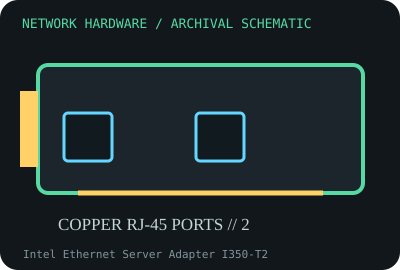

[ MODEL-SPECIFIC NETWORK HARDWARE RECORD ]
Intel Ethernet Server Adapter I350-T2
Dual-port 1 GbE RJ-45 PCIe server adapter using the I350 controller. This record identifies the stated model/revision; visually similar products may use different silicon or firmware.

IDENTIFICATION: Verify the full label, board revision, vendor/device IDs and regulatory markings before selecting firmware or drivers. Nominal PHY/link rates below are not measured application throughput.
Specifications and compatibility
| Subcategory | Ethernet adapters |
|---|---|
| Exact model | Intel Ethernet Server Adapter I350-T2 |
| Interface and connector | PCIe 2.1 x4 host interface; two 10/100/1000BASE-T RJ-45 ports. |
| Controller / PHY / radio | Intel I350 Gigabit Ethernet controller with integrated copper PHYs; IEEE 802.3az energy-efficient Ethernet support is platform/driver dependent. |
| Nominal throughput (not a test) | Two independent ports, each up to 1 Gb/s nominal full-duplex link rate; aggregate arithmetic link capacity is 2 Gb/s per direction, not a single flow guarantee. |
| Measured throughput | Not benchmarked here. Throughput must be measured per port and aggregate, with CPU, PCIe, switch, cabling, flow count and offload state recorded. |
| Driver / OS / firmware | Intel Linux e1000e driver supports I350; Intel supplies Windows and Windows Server packages for listed releases. Adapter NVM and platform firmware should be checked against Intel release notes. |
| Compatibility | PCIe x4 electrical interface (fits longer compatible slots); two copper ports require Cat 5e-or-better for 1000BASE-T. Features such as SR-IOV, teaming and time sync require compatible OS and platform settings. |
| Variant warning | Do not confuse I350-T2 with I350-T4, I350-F2 fiber, or OEM-branded I350 boards; port count, EEPROM/NVM, subsystem IDs, bracket, and supported firmware may differ. |
Variant and operating notes
Do not confuse I350-T2 with I350-T4, I350-F2 fiber, or OEM-branded I350 boards; port count, EEPROM/NVM, subsystem IDs, bracket, and supported firmware may differ.
Intel Linux e1000e driver supports I350; Intel supplies Windows and Windows Server packages for listed releases. Adapter NVM and platform firmware should be checked against Intel release notes.
Throughput policy: vendor/standard rates are labeled nominal. This archive includes no measured benchmark for this specimen; do not interpret a link rate or aggregate port capacity as sustained payload performance.
Archival, ESD and preservation notes
Log Intel/OEM assembly and NVM revision, both MAC addresses and bracket. Use grounded ESD precautions and an antistatic bag; inspect RJ-45 magnetics and port LEDs without flexing the PCB.
Preserve the exact model/revision, serial/date code, firmware and driver versions, accessories, condition, source provenance, and source-document revision. Never retain access credentials or undocumented secrets in the public catalog.
Manufacturer and standards sources
- Intel I350 controller product specificationsManufacturer or standards reference; match the complete model/revision before applying specifications.
- Intel Ethernet adapter support and driversManufacturer or standards reference; match the complete model/revision before applying specifications.
- IEEE 802.3 Ethernet standardsManufacturer or standards reference; match the complete model/revision before applying specifications.
Source coverage can be family-level; manufacturer documentation for the exact part number and hardware revision takes precedence. Standards describe protocol behavior, not a promise of real-world performance.